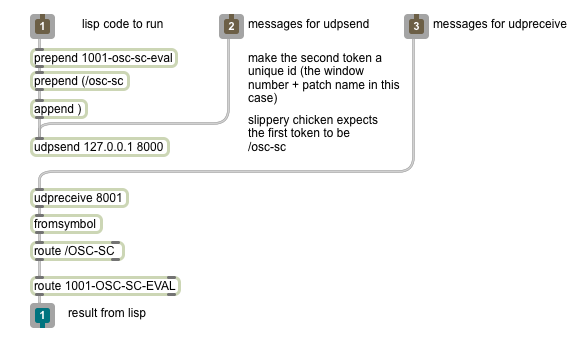

slippery chicken and OSC
Available on Mac OSX and Linux with SBCL only:
Using the
(osc-call) function, slippery chicken can
receive and evaluate any arbitrary Lisp code sent over a UDP network
(i.e. via OSC). The primary application here is to integrate
slippery chicken and e.g. MaxMSP. One possibility would be to
combine the two software systems to generate scores on the fly via an
interface controlled by musicians. See the video below for an example
of this in practice.
For an example MaxMSP patch, see osc-test.maxpat (in the examples folder of the documentation). You'll also need osc-sc-eval.maxpat. Simon Bahr got this working in PD using the zexy and mrpeach libraries. The abstraction you can use is osc-test.pd (also in the examples folder) and the test is osc-sc-eval.pd.
To get slippery chicken to accept and process Lisp calls over
OSC, make sure you're in the slippery chicken package and simply
type
(osc-call). At this point the Lisp interpreter gives up
control to OSC but will process commands as they are received (and print
them if you call with :print t). Send a quit
message (to the osc-sc-eval abstraction if using MaxMSP) to return to the
Lisp interpreter.
For those who don't have MaxMSP but would like to use another OSC host
to communicate with slippery chicken, the following screen shot
of the osc-sc-eval MaxMSP abstraction should help:

Return values
Lisp returns the results of function calls via OSC as a list, so the
most appropriate receiving object (e.g. what's connected to the left
outlet of osc-sc-eval.maxpat) to display the results is a message
box. However, connecting straight to any object that can handle numbers is
fine if your function returns a number. Any function which returns T or
NIL will automatically be modified to return 1 or 0 instead by
slippery-chicken's osc-eval Lisp function. More complex
return objects will probably just return the printed version of their
internal structure, which is not so useful, so we're really limited to
simple return types such as lists, symbols, and numbers.